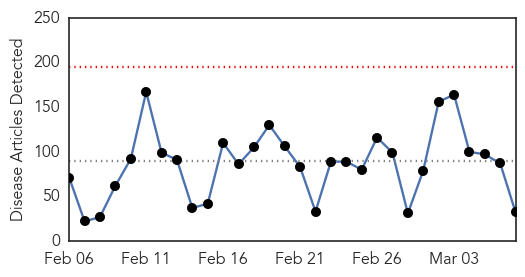
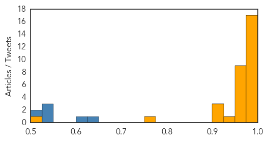
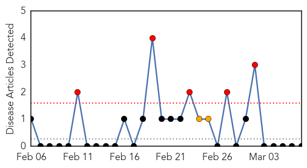

Ebola
30-Day Web Trend
0 alerts, 0 warnings

30-Day Twitter Trend
5 alerts, 5 warnings

Article Locations

Article Confidences
Top Articles:
- 1.000
- The biggest threat to stopping Ebola is thinking that it’s over now
- 1.000
- Ebola Virus Epidemic and Outbreak News
- 1.000
- Last Ebola patient is released in Liberia Republican American
- 1.000
- Ban on health workers' travel to Ebola-hit nations remains
- 1.000
- Systems for Rapidly Detecting and Treating Persons with Ebola Virus Disease — United States
- 1.000
- Ban on health workers’ travel to Ebola-hit nations remains
- 1.000
- WHO to begin large-scale testing of Ebola vaccine in Guinea
- 0.999
- Exclusive: Guinea says Ebola patients sent home after botched blood tests
- 0.998
- Spanish Health Authorities Discard Ebola After Another Alert Over Suspected Case in Alicante
- 0.998
- Kenya : Africa is on the rise, but Ebola menace exposes our selective pan-Africanism
- 0.996
- The survivors, orphans and workers the disease left behind
- 0.996
- Soldiers from Sierra Leone return home
- 0.995
- Ebola Survivors Emerge as New Focus for Care
- 0.995
- African tourism acts to shake off Ebola stigma
- 0.994
- First Ebola survivors talk of hope and despair in Guinea
- 0.991
- Report: As Ebola wanes, other countries remain vulnerable
- 0.979
- Ebola's Youngest Victims: Liberian Children Face New Health Challenges As Outbreak Subsides
- 0.970
- Experimental Ebola Vaccine Appears Successful in At Least One Case
- 0.966
- Nina Pham, Dallas nurse who contracted Ebola, sues hospital
- 0.951
- Police killing of black teenager sparks protest in US
- 0.951
- Sierra Leone’s vice president expelled from ruling party
- 0.951
- Helen Flanagan flaunts baby bump in style
- 0.951
- Sierra Leone VP Sam Sumana expelled as ruling APC on the brink of implosion
- 0.951
- Sierra Leone: Surviving Together, in Ebola-Hit Sierra Leone
- 0.951
- Microsoft Windows also vulnerable to FREAK encryption bug
- 0.951
- 57 arrested in cyber crime operations in Britain
- 0.947
- A Happy Milestone: ‘Zero Patients’ in Liberia
- 0.924
- After Ebola, Can The CDC Earn Back Our Trust?
- 0.921
- British Ebola nurse appears on misconduct charge over whether symptoms were concealed
- 0.911
- W/B, Japan to provide Psychological support to Ebola victims
- 0.753
- WHO Begins Ebola Vaccine Trial in Guinea
- 0.521
- Minister visits Manchester to thank UK Ebola workers
Top Tweets:
- 0.861
- Sierra Leone athlete arrested in London for overstaying visa because Ebola ... - The Independent http://t.co/bSRFfh74vC ebola EVD
- 0.858
- Photos: Canadian Forces Ebola fighters return from Sierra Leone - Ottawa Citizen http://t.co/PJREYSh0k6 ebola EVD
- 0.804
- African tourism acts to shake off Ebola stigma - Yahoo News http://t.co/ndtLdEPSW7 ebola EVD
- 0.753
- Police: No case of Ebola found in Franklin Square - News 12 Long Island http://t.co/r2InLuNLKj ebola EVD
- 0.735
- Ebola vaccine given for just second time; a 7th person in Chicago tested for ... - Chicago Sun-Times http://t.co/lEnRUhdRvz ebola EVD
- 0.735
- Ebola vaccine given for just second time; a 7th person in Chicago tested for ... - Chicago Sun-Times http://t.co/e1g5mZmYj9 ebola EVD
- 0.735
- Ebola vaccine given for just second time; a 7th person in Chicago tested for ... - Chicago Sun-Times http://t.co/9pXzJW8vwd ebola EVD
- 0.667
- RT: Ebola vaccine given for just second time; a 7th person in Chicago tested for deadly virus: None... http://t.co/oZkzXVrjFU Eb…
Mold/Fungal
30-Day Web Trend
5 alerts, 2 warnings

30-Day Twitter Trend
0 alerts, 0 warnings

Article Locations

Article Confidences

Top Articles:
-
No articles found for Mar 07, 2015
Top Tweets:
-
No tweets found for Mar 07, 2015